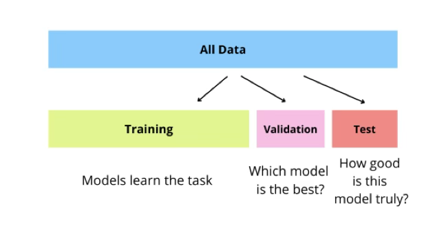

MLDL AI 통계학 part01
Chapter 1. 통계학과 AI
인공지능(AI)은 더 이상 공학이나 컴퓨터과학 전공자들만의 전유물이 아니다. 최근의 데이터 분석 환경에서 AI, 머신러닝, 딥러닝은 사회과학, 자연과학, 정책 분석, 산업 분석 전반에 걸쳐 핵심적인 분석 도구로 자리 잡고 있다. 이러한 변화 속에서 통계학을 전공하는 학생들은 자연스럽게 다음과 같은 질문에 직면하게 된다.
”AI는 통계학과 무엇이 다른가?“,
”머신러닝은 통계학을 대체하는가?”,
그리고 ”통계학 전공자는 AI 시대에 어떤 역할을 수행해야 하는가?”
이 질문들에 대한 답은 단순한 기법 비교나 성능 우열의 문제가 아니다. 오히려 각 방법론이 어떤 문제를 목표로 설정하고, 어떤 방식으로 불확실성을 다루며, 어떤 결과를 의미 있는 지식으로 간주하는가라는 철학적·방법론적 차이를 이해하는 데서 출발해야 한다.
통계학과 AI는 서로 대립하거나 경쟁하는 관계가 아니다. 두 영역은 확률론, 선형대수, 최적화 이론이라는 공통의 수학적 기반 위에서 출발하였으나, 문제의 성격과 분석 목적에 따라 서로 다른 방향으로 발전해 온 방법론 체계이다. 따라서 AI 시대의 통계학은 사라지는 학문이 아니라, 오히려 그 역할과 정체성을 새롭게 재정의해야 할 시점에 놓여 있다고 볼 수 있다.
1. 통계학의 출발점: 불확실성에 대한 학문
통계학은 본질적으로 불확실성 하에서의 추론과 의사결정을 다루는 학문이다. 제한된 표본 자료로부터 모집단의 특성을 추론하고, 그 추론 결과에 수반되는 불확실성을 정량적으로 평가하는 것이 통계학의 핵심 목표이다. 이를 위해 통계학은 확률모형과 분포에 대한 가정, 체계적인 표본설계, 그리고 추정과 가설검정을 포함하는 엄격한 이론적 틀을 발전시켜 왔다.
통계학적 분석에서 중요한 것은 단순히 하나의 추정값이나 검정 결과를 제시하는 데 그치지 않는다. 분석 결과가 어떤 가정 하에서 도출되었는지, 추정의 변동성은 어느 정도인지, 그리고 표본이 달라지더라도 유사한 결론이 도출될 것으로 기대할 수 있는지와 같은 해석 가능성과 신뢰성이 함께 고려되어야 한다.
이와 같은 이유로 통계학은 오랫동안 과학적 실험 연구, 사회과학 분석, 정책 평가, 공공 통계 작성 등에서 핵심적인 분석 도구로 활용되어 왔다. 통계학은 단순한 계산 기법이 아니라, 불확실한 현실 세계를 합리적으로 이해하고 설명하기 위한 학문적 방법론이라 할 수 있다.
2. AI와 머신러닝의 문제 설정 방식
반면 AI와 머신러닝은 예측 성능의 극대화를 중심 목표로 발전해 온 방법론이다. 머신러닝에서 핵심적으로 던지는 질문은 다음과 같이 요약할 수 있다.
”주어진 데이터로부터 미래의 관측값을 얼마나 정확하게 예측할 수 있는가?”
이러한 문제 설정 하에서 머신러닝은 전통적인 통계학에서 강조해 온 확률분포 가정이나 모형 해석보다는, 손실함수(loss function)의 정의, 최적화(optimization) 과정, 그리고 일반화 성능(generalization)을 중심으로 모델을 설계한다. 즉, 모형이 이론적으로 왜 그러한 형태를 갖는가보다는, 새로운 데이터에 대해 얼마나 작은 오차를 보이는가가 우선적인 평가 기준이 된다.
딥러닝은 이러한 머신러닝의 접근 방식을 한 단계 더 확장한 형태로, 데이터로부터 특징(feature) 자체를 자동으로 학습하는 표현학습(representation learning)을 가능하게 한다. 이는 분석자가 사전에 변수를 설계하지 않더라도, 대규모 데이터와 다층 신경망 구조를 통해 복잡한 비선형 패턴을 직접 학습할 수 있음을 의미한다. 그 결과 딥러닝은 이미지, 음성, 자연어와 같이 구조가 복잡한 데이터 영역에서 특히 강력한 성능을 보이게 되었다.
3. 통계학과 AI는 어디서 만나는가
중요한 점은 AI와 머신러닝이 통계학과 완전히 분리된 길에서 출발한 방법론이 아니라는 사실이다. 선형회귀, 로지스틱 회귀, 주성분분석(PCA)과 같은 통계학의 핵심 기법들은 이미 머신러닝의 기본 알고리즘으로 재해석되어 널리 활용되고 있다. 이는 통계학과 AI가 공통의 수학적·방법론적 토대 위에 놓여 있음을 보여준다.
실제로 통계학의 주요 개념들은 머신러닝의 핵심 원리로 자연스럽게 연결된다. 최대우도추정은 경험적 위험 최소화(empirical risk minimization)로 해석될 수 있으며, 정규화는 모형의 복잡도를 제어하여 과적합을 방지하는 기법으로 활용된다. 또한 교차검증은 통계학의 표본 변동성에 대한 사고를 기반으로 한 모델 평가의 표준 절차로 자리 잡았다.
이러한 관점에서 볼 때, 통계학은 AI와 머신러닝의 이론적 뿌리 중 하나라고 할 수 있다. 반대로 AI는 통계학적 사고를 대규모 데이터와 강력한 계산 능력이라는 환경 속에서 확장하고 구현한 결과물로 이해할 수 있다. 즉, 두 방법론은 대립하는 관계가 아니라, 문제의 규모와 목적에 따라 강조점이 달라진 연속선상에 놓여 있다고 볼 수 있다.
4. 통계학 전공생에게 AI를 배우는 의미
통계학 전공생에게 AI를 학습한다는 것은 단순히 새로운 알고리즘이나 프로그래밍 기술을 익히는 것을 의미하지 않는다. 이는 예측과 추론의 차이를 구분하고, 모델의 성능과 해석 가능성 사이의 균형을 고민하며, 데이터 편향과 과적합, 그리고 결과의 불확실성을 비판적으로 평가하는 분석 역량을 확장하는 과정이다.
AI 시대에 통계학 전공자가 지니는 강점은 여전히 유효하다. 오히려 데이터의 규모가 커지고 모델 구조가 복잡해질수록, 통계적 사고와 검증 절차 없이 구축된 AI 모델은 그 결과를 신뢰하기 어려워진다. 이러한 환경에서 통계학 전공자는 AI 모델을 단순히 ”잘 작동하는 도구”로 사용하는 데 그치지 않고, 그 결과가 언제, 왜, 어느 정도까지 신뢰 가능한지를 판단할 수 있는 핵심적인 역할을 수행하게 된다.
Chapter 2. AI MLDL 개념적 위계

1. 인공지능(AI)의 정의와 역사적 맥락
인공지능(Artificial Intelligence, AI)은 인간의 지적 활동을 기계가 수행하도록 만들고자 하는 모든 시도와 방법론의 총칭이다. 여기서 핵심은 ’지능 그 자체를 구현한다’는 철학적 목표라기보다, 지능적으로 보이는 문제 해결 행동을 기계적으로 구현하는 것에 있다. 이러한 이유로 AI는 특정 알고리즘이나 단일 기술을 의미하지 않으며, 규칙 기반 추론, 탐색 알고리즘, 최적화 기법, 학습 알고리즘 등을 모두 포함하는 포괄적인 상위 개념으로 이해된다.
초기의 AI 연구는 인간이 명시적으로 규칙을 설계하여 문제를 해결하는 접근에 주로 집중하였다. 대표적인 예로 전문가 시스템은 ”만약 A이면 B이다”와 같은 규칙 집합을 통해 인간 전문가의 판단 과정을 모사하고자 하였다. 그러나 이와 같은 방식은 규칙 설계에 드는 비용이 매우 크고, 예외 상황이 빈번한 현실 세계의 복잡성과 불확실성을 충분히 반영하기 어렵다는 한계를 지녔다.
이러한 한계는 문제 해결 규칙을 사람이 직접 정의하는 대신, 데이터로부터 규칙과 패턴을 학습하는 접근의 필요성을 부각시켰다. 그 결과 등장한 것이 머신러닝이며, 이는 AI 연구의 중심축을 규칙 기반 접근에서 데이터 기반 접근으로 이동시키는 결정적인 전환점이 되었다.
2. 머신러닝(ML)의 등장과 문제 설정 방식
머신러닝(Machine Learning, ML)은 명시적인 규칙을 사람이 직접 프로그래밍하지 않고, 데이터로부터 규칙과 패턴을 학습하는 방법론이다. 머신러닝의 핵심 질문은 다음과 같이 정리할 수 있다.
”주어진 입력 데이터 X로부터 출력 Y를 잘 예측하는 함수 f를 어떻게 학습할 것인가?”
이러한 문제 설정 하에서 머신러닝은 확률분포의 정확한 형태를 사전에 가정하기보다는, 손실함수(loss function)를 정의하고 주어진 데이터를 이용하여 해당 손실을 최소화하는 함수를 찾는 최적화 문제로 접근한다. 즉, 학습 과정은 \(\min_{f}\mathcal{L}(Y,f(X))\)의 형태로 표현될 수 있다.
이 관점에서 머신러닝은 통계학의 전통적인 추론 문제보다는 예측 문제에 초점을 둔다. 통계학에서 중요한 신뢰구간이나 가설검정보다는, 학습에 사용되지 않은 새로운 데이터에 대해 얼마나 작은 예측 오차를 보이는지가 우선적인 평가 기준이 된다.
머신러닝은 문제 설정과 데이터의 특성에 따라 지도학습, 비지도학습, 준지도학습 등으로 구분된다. 이러한 분류는 이후 통계적 방법론과 머신러닝 기법을 비교·정리하는 과정에서 중요한 기준으로 활용된다.
3. 딥러닝(DL)의 특징과 표현학습 개념
딥러닝(Deep Learning, DL)은 머신러닝의 하위 분야로, 다층 신경망(neural network) 구조를 이용한 학습 방법을 의미한다. 딥러닝의 가장 큰 특징은 분석자가 사전에 설계하던 특징(feature)을 모델이 데이터로부터 직접 학습한다는 점에 있다.
이러한 학습 방식을 표현학습(representation learning)이라 부르며, 분석 패러다임의 다음과 같은 전환을 의미한다.
- 전통적 분석: 연구자가 변수 변환과 특징을 사전에 설계
- 딥러닝 기반 분석: 원자료(raw data)로부터 유용한 표현을 자동으로 학습
표현학습의 도입으로 딥러닝은 이미지, 음성, 자연어와 같이 구조가 복잡하고 비선형성이 강한 데이터에서도 높은 예측 성능을 달성할 수 있게 되었다. 이는 사람이 명시적으로 정의하기 어려운 고차원 패턴을 신경망이 계층적으로 학습할 수 있기 때문이다.
반면, 모델 구조와 학습 과정이 복잡해지면서 해석 가능성의 감소, 블랙박스 문제, 그리고 결과에 대한 신뢰성과 책임성 문제가 중요한 논점으로 부각되었다. 이러한 한계는 이후 설명가능 AI와 통계적 검증의 필요성으로 다시 연결된다.
4. AI–ML–DL의 포함관계와 역할 분담
AI, ML, DL은 서로 독립적인 개념이 아니라 포함 관계를 이루는 계층적 구조를 가진다. AI는 지능적 행동을 기계적으로 구현하려는 모든 방법론을 포괄하는 가장 상위의 개념이며, ML은 그중에서도 데이터로부터 규칙과 패턴을 학습하는 방법을 의미한다. DL은 다시 ML의 하위 영역으로, 다층 신경망 구조를 이용하여 데이터의 표현을 학습하는 방법론에 해당한다.
이러한 위계 구조에서 중요한 점은 모든 AI가 머신러닝을 사용하는 것은 아니며, 모든 머신러닝이 딥러닝으로 구현되는 것도 아니라는 사실이다. 문제의 특성과 데이터의 규모, 해석 가능성의 필요성에 따라서는 단순한 통계모형이나 규칙 기반 방법이 딥러닝보다 더 적절한 선택이 될 수 있다.
따라서 딥러닝은 가장 강력한 방법이라는 의미에서 이해되기보다는, 대규모 데이터와 복잡한 구조를 가진 문제에서 특히 효과적인 방법으로 해석하는 것이 바람직하다. 분석 목적과 제약 조건을 고려하여 적절한 방법론을 선택하는 판단력은 여전히 분석자의 중요한 역할로 남아 있다.
5. 데이터 기반 추론 패러다임의 변화
AI·ML·DL의 발전은 데이터 분석의 전반적인 추론 패러다임에 중요한 변화를 가져왔다. 전통적인 통계 분석이 가정 설정, 추론, 해석이라는 흐름을 중시해 왔다면, 현대의 데이터 기반 분석은 데이터로부터의 학습과 그 결과로서의 예측을 중심에 두는 방식으로 전개되고 있다.
이러한 변화는 분석 과정의 중심축이 이동하였음을 의미하며, 다음과 같은 전환으로 요약할 수 있다. 전통적으로는 소표본을 기반으로 한 추론이 중요했다면, 현재는 대규모 데이터를 활용한 분석이 일반화되었다. 또한 명시적인 모형 가정과 이론적 타당성보다는, 실제 데이터에서의 성능 평가가 주요 기준으로 활용되는 경우가 많아졌다. 분석의 목적 역시 현상에 대한 설명 중심에서 미래 값에 대한 예측 중심으로 이동하고 있다.
그러나 이러한 변화는 통계학의 역할을 약화시키는 방향으로 이해되어서는 안 된다. 오히려 데이터의 규모가 커지고 분석 절차가 자동화될수록, 편향과 과적합, 그리고 불확실성에 대한 문제는 더욱 복잡한 형태로 나타난다. 이러한 위험 요소를 체계적으로 점검하고, 분석 결과의 신뢰 가능 범위를 판단하는 능력은 여전히 통계학 전공자의 핵심 역량으로 남아 있다. 데이터 기반 분석의 시대일수록 통계적 사고는 선택이 아니라 필수적인 기반이 된다.
6. 생성형 AI와 통계학
(1) 개념
생성형 AI는 학습된 데이터의 분포 구조를 바탕으로 새로운 데이터를 생성하는 인공지능을 의미한다. 생성 대상은 텍스트, 이미지, 음성, 코드 등 다양한 형태가 될 수 있으며, 핵심은 기존 데이터를 분류하거나 예측하는 데 있지 않고 새로운 데이터를 만들어낸다는 점에 있다.
이러한 차이는 문제 설정의 관점에서 분명히 드러난다. 예를 들어 기존의 분류 문제는 ”이 이미지가 고양이인가?“라는 질문을 던지는 반면, 생성형 AI는 ”고양이 이미지를 하나 생성하라”라는 질문을 다룬다. 즉, 입력에 대한 정답을 맞히는 문제가 아니라, 데이터 자체의 생성 메커니즘을 학습하는 문제가 된다.
통계학의 관점에서 보면 생성형 AI는 매우 친숙한 개념이다. 본질적으로 생성형 AI가 풀고자 하는 문제는 다음과 같이 정리할 수 있다. 관측된 데이터가 따르는 확률분포를 학습하고, 그 분포로부터 새로운 표본을 생성하라는 것이다. 이는 전통적인 통계학에서 확률모형을 설정하고 모수를 추정한 뒤, 해당 모형을 이용해 시뮬레이션을 수행하는 과정과 동일한 철학을 공유한다.
생성형 AI와 전통적 통계학의 차이는 분포에 대한 접근 방식에 있다. 전통적 통계학에서는 분포의 형태를 사전에 가정한 뒤 모수를 추정하는 방식이 일반적이었다면, 생성형 AI에서는 분포의 형태 자체를 데이터로부터 학습한다. 즉, 분포를 안다고 가정하는 접근에서 분포를 학습하는 접근으로의 전환이 이루어진 것이다.
| 구분 | 전통적 통계 | 생성형 AI |
| 분포 가정 | 명시적 | 암묵적(신경망) |
| 차원 | 저차원 | 초고차원 |
| 목적 | 추론·해석 | 생성·표현 |
| 계산 | 분석적 | 수치적 최적화 |
”분포를 안다고 가정” vs ”분포를 학습한다”의 차이이다.
(2) 생성형 모델 vs 판별형 모델
개념
통계학의 관점에서 생성형 모델과 판별형 모델은 문제 설정 단계에서부터 명확히 구분된다. 두 접근은 모두 분류나 예측 문제를 다룰 수 있지만, 무엇을 모델링 대상으로 삼는가에서 근본적인 차이를 가진다.
판별형 모델은 주어진 입력으로부터 타깃 변수를 정확히 예측하는 것을 목표로 한다. 즉, 입력 X가 주어졌을 때 반응변수 Y를 얼마나 잘 맞출 수 있는지가 핵심 관심사이다. 이때 모델은 데이터의 생성 구조보다는 결정경계와 예측 오차 최소화에 집중한다.
이에 비해 생성형 모델은 데이터가 어떻게 생성되었는지를 설명하는 확률 구조를 모델링한다. 관측된 데이터의 공동분포 P(X, Y) 또는 비지도 설정에서는 P(X)를 학습하고, 그 분포로부터 새로운 데이터를 생성하거나 확률적 판단을 수행하는 데 목적이 있다. 통계학 관점에서 두 부류는 아주 명확히 갈립니다.
- 판별형(discriminative): ”구분/예측”이 목표
- 생성형(generative): ”데이터가 어떻게 생겨났는지(분포)“를 모델링
판별형 모델 \(P(Y \mid X)\)
판별형 모델은 입력 변수 X가 주어졌을 때 반응변수 Y를 얼마나 정확하게 예측할 수 있는가에 초점을 둔 방법론이다. 이 접근에서는 데이터가 어떻게 생성되었는지를 모델링하기보다는, 주어진 입력에 대해 올바른 출력이 선택되도록 결정경계를 학습하는 것이 핵심 목표가 된다.
이를 수식적으로 표현하면, 판별형 모델은 예측 함수 f를 선택하여 실제 값 Y와 예측값 f(X) 사이의 손실을 최소화하는 문제로 정식화할 수 있다. 즉, \(\widehat{f} = \arg\min_{f}\mathbb{E}\lbrack\ell(Y,f(X))\rbrack\)와 같이 정의되며, 여기서 손실함수는 분류 오류나 예측 오차를 정량화하는 역할을 한다.
이러한 구조에서 판별형 모델의 주요 관심사는 결정경계의 형태와 예측 오차를 얼마나 효과적으로 줄일 수 있는가에 있다. 대표적인 판별형 모델로는 로지스틱 회귀, 서포트 벡터 머신, 결정트리와 랜덤포레스트, 그리고 대부분의 신경망 기반 분류기가 포함된다. 이들 방법은 모두 입력과 출력 사이의 직접적인 관계를 학습함으로써 높은 예측 성능을 달성하는 데 목적을 둔다.
생성형 모델 P(X,Y) 또는 P(X)
생성형 모델은 입력과 출력의 관계를 직접 예측하는 데 초점을 두기보다는, 데이터가 생성되는 확률 구조 자체를 모델링하는 방법론이다. 통계학적으로 생성형 모델은 관측된 데이터가 따르는 공동분포 P(X, Y)를 모형화하거나, 비지도 학습의 경우 입력 데이터의 분포 P(X) 자체를 학습하는 것을 목표로 한다.
이를 수식으로 표현하면, 생성형 모델은 \(P(X,Y) = P(Y)P(X \mid Y)\)와 같은 형태의 공동분포를 가정하거나, 라벨이 없는 경우에는 \(P(X)\)를 직접 추정한다. 이러한 접근에서 핵심 질문은 ”이 데이터가 관측될 확률은 얼마나 되는가”, 혹은 ”이 분포로부터 새로운 데이터를 생성하면 어떤 형태가 나오는가”와 같이 데이터의 생성 메커니즘에 관한 것이다.
생성형 모델은 분류 문제에도 활용될 수 있다. 이 경우 먼저 \(P(X \mid Y)\)와 P(Y)를 학습한 뒤, 베이즈 규칙을 이용해 사후확률 \(P(Y \mid X)\)를 계산함으로써 의사결정을 수행한다. 즉, 예측을 직접 학습하기보다는 분포를 학습한 결과로부터 예측을 간접적으로 도출한다는 점에서 판별형 모델과 구별된다.
전통적인 생성형 모델로는 나이브 베이즈, 가우시안 생성 가정을 기반으로 한 LDA와 QDA, 가우시안 혼합모형(GMM), 은닉 마르코프 모형(HMM) 등이 있으며, 이들은 명시적인 확률모형과 잠재변수 구조를 통해 데이터 생성 과정을 설명한다. 최근의 생성형 AI에서는 변분 오토인코더(VAE), 생성적 적대 신경망(GAN), 확산모형(Diffusion), 자기회귀 모델(Transformer)과 같이 신경망을 이용해 고차원 데이터의 분포를 근사하는 방법들이 널리 활용되고 있다.
판별형 모델과 생성형 모델 비교
요약하면, 판별형 모델과 생성형 모델은 동일한 분류·예측 문제를 다루더라도 문제를 바라보는 관점이 근본적으로 다르다. 판별형 모델은 입력 X가 주어졌을 때 반응변수 Y를 얼마나 정확하게 맞출 수 있는가에 집중하며, 결정경계의 형태와 예측 오차 최소화를 중심으로 모델을 학습한다. 반면 생성형 모델은 데이터가 어떤 확률 구조를 통해 생성되었는지를 먼저 모델링하고, 그 결과로부터 예측이나 분류를 간접적으로 도출한다. 즉, 판별형 모델이 ”무엇을 맞출 것인가”에 초점을 둔다면, 생성형 모델은 ”데이터가 어떻게 만들어졌는가”를 설명하려는 접근이라 할 수 있다. 이러한 차이는 예측 성능뿐만 아니라, 해석 가능성, 결측치 처리, 소표본 상황에서의 거동, 그리고 생성과 시뮬레이션과 같은 분석 목적 전반에 걸쳐 서로 다른 장단점으로 이어진다.
의사결정(분류)은 둘 다 할 수 있다
판별형 모델과 생성형 모델은 접근 방식은 다르지만, 의사결정 문제, 특히 분류 문제는 모두 수행할 수 있다는 공통점을 가진다. 차이는 분류를 수행하기 위해 무엇을 직접 학습하는가에 있다.
판별형 분류에서는 입력 x가 주어졌을 때 각 범주 y에 대한 조건부 확률 P(y \mid x)를 직접 모델링한다. 분류 결과는 이 조건부 확률을 최대화하는 범주로 결정되며, 이는 다음과 같이 표현된다.
\[\widehat{y} = \arg\max_{y}P(y \mid x)\]
이 접근에서는 데이터의 생성 과정보다는, 주어진 입력에 대해 가장 그럴듯한 반응변수를 바로 추정하는 데 초점이 맞춰진다.
반면 생성형 모델을 이용한 분류는 베이즈 규칙에 기반한다. 생성형 접근에서는 먼저 각 범주에서 데이터가 생성되는 방식인 \(P(x \mid y)\)와 범주의 사전확률 P(y)를 학습한다. 이후 이들을 결합하여 \(P(y \mid x) = \frac{P(x \mid y)P(y)}{\sum_{k}P(x \mid k)P(k)}\)와 같이 후방확률을 계산하고, 이를 바탕으로 분류를 수행한다. 즉, 생성형 분류는 분포를 먼저 학습한 뒤, 그 결과로부터 분류를 간접적으로 도출하는 방식이다.
요약하면, 판별형 모델은 \(P(y \mid x)\)를 직접 학습하여 분류를 수행하는 반면, 생성형 모델은 \(P(y \mid x)\)와 P(y)를 학습한 뒤 이를 결합하여 \(P(y \mid x)\)를 계산한다. 두 접근은 동일한 의사결정 문제에 도달하지만, 학습 대상과 해석의 관점에서 본질적인 차이를 가진다.
통계학 전공생에게 가장 중요한 비교 포인트 6가지
통계학 전공생의 관점에서 판별형 모델과 생성형 모델을 비교할 때 가장 먼저 주목해야 할 차이는 분석의 목적이다. 판별형 모델은 분류나 회귀와 같은 예측 문제에서 정확도를 극대화하는 데 1차적인 목표를 둔다. 반면 생성형 모델은 개별 예측 성능보다 데이터가 생성되는 분포 구조 자체를 설명하고 모사하는 데 초점을 맞추며, 데이터 생성과 시뮬레이션까지 분석 범위에 포함한다.
두 번째 차이는 학습에 사용되는 신호의 성격이다. 판별형 모델은 일반적으로 반응변수 Y가 제공되는 지도학습 환경을 전제로 하며, 라벨 정보가 없는 상황에서는 적용이 제한된다. 이에 비해 생성형 모델은 입력 데이터의 분포 P(X)를 직접 학습할 수 있기 때문에 라벨이 없는 비지도학습이나 자기지도학습 환경에서도 자연스럽게 활용될 수 있다.
세 번째로 중요한 비교 포인트는 결측치와 잠재변수 처리 방식이다. 생성형 모델은 데이터의 확률분포를 명시적으로 모델링하기 때문에 결측된 입력 값을 분포 기반으로 보완하거나, 혼합모형과 같은 잠재변수 구조를 통해 데이터의 숨겨진 생성 메커니즘을 표현하는 데 강점을 가진다. 반면 판별형 모델은 결측치가 존재하는 경우 대치, 마스킹, 전처리와 같은 별도의 전략이 필요해지는 경우가 많다.
네 번째는 소표본 상황에서의 거동이다. 고전적인 통계 이론에서 흔히 요약되는 경향에 따르면, 생성형 모델은 분포 가정이 적절할 경우 표본 수가 적더라도 비교적 빠르게 안정적인 추정을 보일 수 있다. 이는 추정해야 할 파라미터 수가 많더라도 구조적 가정을 통해 정보를 효율적으로 활용하기 때문이다. 반면 판별형 모델은 표본이 충분히 확보되었을 때 결정경계를 직접 최적화하므로 더 우수한 예측 성능을 보이는 경우가 많다. 다만 실제 데이터 분석에서는 모형 미스펙, 규제 방법, 데이터 구조에 따라 이러한 관계가 역전될 수 있다.
다섯 번째 비교 포인트는 분포 이동이나 이상치 탐지와 관련된다. 생성형 모델은 P(X)나 likelihood 값을 통해 특정 데이터가 학습된 분포에서 얼마나 벗어나 있는지를 정량화할 가능성을 제공한다. 반면 판별형 모델은 훈련 분포 밖의 입력에 대해서도 과도한 확신을 보일 수 있어, 확률 보정이나 calibration이 중요한 이슈가 된다. 다만 현대의 딥러닝 기반 생성모형에서도 likelihood가 항상 분포 이동을 잘 반영하지는 않는다는 점에서, 이는 가능성의 문제이지 보장된 성질은 아니다.
마지막으로 해석 가능성의 측면에서 두 접근은 서로 다른 장단점을 가진다. 로지스틱 회귀와 같은 판별형 선형 모형은 계수 해석이 비교적 명확한 반면, 생성형 모델은 데이터가 생성되는 과정을 중심으로 한 설명 프레임을 제공한다. 혼합모형이나 HMM과 같은 전통적 생성형 모델은 구조적 해석이 가능한 반면, 딥러닝 기반 생성형 모델은 해석은 어렵지만 고차원 표현을 학습하는 데 강점을 가진다.
대표 모델을 ”통계학 언어”로 정리
대표적인 판별형 모델들은 통계학의 언어로 해석할 때, 조건부 평균이나 조건부 확률을 직접 모델링하는 구조로 이해할 수 있다. 선형회귀는 입력 변수 X가 주어졌을 때 반응변수 Y의 조건부 기댓값을 \(\mathbb{E}\lbrack Y \mid X\rbrack = X\beta\)의 형태로 표현하며, 오차의 제곱합을 최소화하는 추정 문제로 정식화된다. 로지스틱 회귀는 이 아이디어를 이진 반응변수로 확장한 모형으로, 성공 확률 \(P(Y = 1 \mid X)\)의 로그 오즈를 선형 결합 X\beta로 모델링함으로써 분류 문제를 다룬다.
서포트 벡터 머신은 확률 모형을 명시적으로 가정하지 않지만, 결정경계를 직접 최적화한다는 점에서 판별형 접근에 해당한다. 특히 마진을 최대화하는 방향으로 hinge loss를 최소화하는 문제로 해석할 수 있다. 결정트리와 앙상블 모형은 입력 공간을 분할하여 각 영역에서 예측 오차를 최소화하는 방식으로 작동하며, 분포 가정보다는 데이터 기반 분할 규칙에 의존한다는 점에서 대표적인 판별형 방법으로 분류된다.
전통적인 생성형 모델들은 데이터가 생성되는 확률 구조를 명시적으로 가정하고 이를 추정하는 방식으로 구성된다. 나이브 베이즈 모형은 조건부 독립 가정을 통해 \(P(X \mid Y)\)를 변수별 확률의 곱으로 단순화하며, 이를 통해 계산 효율성과 해석 가능성을 확보한다. LDA와 QDA는 각 클래스에서 입력 변수 X가 정규분포를 따른다고 가정하고, 평균과 공분산 구조의 차이에 따라 선형 또는 이차 형태의 결정경계를 유도한다.
가우시안 혼합모형은 데이터 분포를 여러 개의 가우시안 성분의 가중합으로 표현하며, 잠재적인 군집 구조를 확률적으로 모델링한다. 은닉 마르코프 모형은 관측되지 않는 잠재 상태가 시간에 따라 전이하면서 관측열을 생성한다고 가정하는 모형으로, 시계열 데이터의 생성 구조를 설명하는 데 활용된다.
현대의 생성형 AI 모델들은 이러한 확률적 생성 아이디어를 신경망 기반으로 확장한 결과로 이해할 수 있다. 자기회귀 모델, 특히 Transformer 기반 모델은 전체 데이터의 결합분포를 조건부 확률의 곱으로 분해하여 순차적으로 학습한다. 변분 오토인코더는 잠재변수 z를 도입하여 관측 데이터의 분포 P(X)를 근사하며, ELBO를 최적화하는 방식으로 학습이 이루어진다. 생성적 적대 신경망은 생성기와 판별기가 서로 경쟁하는 게임 구조를 통해 샘플의 품질을 향상시키는 접근을 취한다. 확산모형은 데이터에 점진적으로 노이즈를 추가한 뒤 이를 제거하는 과정을 학습함으로써 고품질 데이터를 생성하는 방식으로 해석할 수 있다.
이처럼 판별형 모델과 생성형 모델은 서로 다른 형태를 띠고 있지만, 통계학의 언어로 해석하면 모두 확률, 손실함수, 최적화라는 공통된 틀 안에서 이해될 수 있다. 이는 현대 AI 모델이 통계학과 단절된 새로운 방법론이 아니라, 기존 통계적 사고를 계산 능력과 데이터 규모의 확장 속에서 구현한 결과임을 보여준다.
직관적 예시
첫 번째 예시는 스팸 분류 문제이다. 판별형 접근에서는 이메일의 단어 빈도, 링크 수, 발신 정보와 같은 특징 X가 주어졌을 때 해당 이메일이 스팸인지 여부 Y를 직접 예측하는 모델을 학습한다. 이 과정에서 모델은 스팸과 정상 메일을 가르는 결정경계를 형성하는 데 집중하며, 목표는 새로운 이메일에 대해 분류 오류를 최소화하는 것이다.
반면 생성형 접근에서는 먼저 스팸 메일이 어떤 형태의 이메일을 생성하는지에 해당하는 분포 \(P(X \mid Y = \text{spam})\)과 정상 메일의 분포 \(P(X \mid Y = \text{normal})\), 그리고 전체 메일 중 스팸의 비율 P(Y)를 학습한다. 이후 베이즈 규칙을 이용해 주어진 이메일이 스팸일 확률을 계산하고 이를 바탕으로 분류를 수행한다. 즉, 생성형 모델은 이메일이 만들어지는 구조를 이해한 뒤, 그 결과로 분류를 수행한다.
두 번째 예시는 이미지 데이터이다. 판별형 모델은 주어진 이미지가 고양이인지 여부를 판단하는 문제를 다룬다. 이 경우 모델의 역할은 입력된 이미지로부터 고양이와 비고양이를 구분하는 특징을 학습하고, 분류 정확도를 최대화하는 것이다.
이에 비해 생성형 모델은 이미지가 생성되는 분포 자체에 관심을 둔다. 고양이 이미지를 생성하라는 과제는 고양이 이미지가 따르는 데이터 분포를 학습한 뒤 그 분포로부터 새로운 이미지를 샘플링하는 문제로 이해할 수 있다. 또한 주어진 이미지가 자연스러운 데이터 분포에 속하는지 판단하는 문제 역시 생성형 모델의 관점에서는 해당 이미지가 학습된 분포에서 얼마나 그럴듯한지를 평가하는 문제로 해석된다.
(3) 생성형 AI 혁신성
생성형 AI의 등장은 종종 완전히 새로운 통계적 원리가 등장한 결과로 오해되곤 한다. 그러나 보다 정확하게 말하면, 생성형 AI의 혁신성은 이론 그 자체의 새로움에 있기보다는, 기존의 통계적 사고가 현실적으로 작동할 수 있는 조건들이 동시에 충족되었다는 점에 있다. 즉, 생성형 AI는 통계학, 머신러닝, 그리고 컴퓨팅 환경이 하나의 임계점을 넘어선 결과물로 이해할 수 있다.
첫 번째 조건은 초대규모 데이터의 축적이다. 전통적인 통계 분석에서 확률분포를 추정하거나 모형을 적합할 때 가장 큰 제약은 항상 표본의 크기였다. 표본이 제한적일수록 분포 가정은 강해질 수밖에 없었고, 이는 분석의 유연성과 표현력을 제약하는 요인이었다. 그러나 현대의 데이터 환경에서는 텍스트, 이미지와 영상, 그리고 다양한 행동 로그와 센서 데이터가 대규모로 축적되면서, 데이터 자체가 복잡한 확률분포의 형태를 경험적으로 근사할 수 있을 만큼 충분한 정보를 제공하게 되었다. 통계학적으로 보면 이는 모형을 단순화해야만 했던 환경적 제약이 크게 완화되었음을 의미한다.
두 번째 조건은 딥러닝이 제공하는 고차원 함수 근사 능력이다. 데이터가 아무리 많더라도 이를 설명할 수 있는 함수 공간이 충분히 유연하지 않다면, 복잡한 분포를 학습하거나 새로운 데이터를 생성하는 것은 불가능하다. 다층 신경망은 매우 복잡한 비선형 함수를 근사할 수 있으며, 명시적인 분포 가정 없이도 데이터의 구조를 학습할 수 있다. 또한 특징을 사람이 사전에 설계하지 않아도 표현을 자동으로 학습할 수 있다는 점에서, 통계학에서 말하는 비모수적 추정과 고차원 밀도 추정을 계산적으로 구현 가능하게 만든 도구로 볼 수 있다. 이는 분포를 안다고 가정하는 접근에서 벗어나, 분포를 표현할 수 있는 함수 자체를 학습하는 방향으로의 확장을 의미한다.
세 번째 조건은 계산 자원의 비약적인 발전, 특히 GPU의 등장이다. 생성형 모델은 수백만에서 수십억 개에 이르는 매개변수를 포함하며, 학습 과정에서 반복적인 미분 기반 최적화를 필요로 한다. 이러한 계산량은 기존의 CPU 중심 환경에서는 현실적으로 감당하기 어려웠다. GPU의 병렬 연산 구조는 대규모 행렬 연산을 효율적으로 처리하고, 반복적인 최적화 과정을 안정적으로 수행할 수 있게 만들었다. 통계학의 관점에서 보면, 이는 이론적으로는 가능했지만 계산 비용 때문에 실제 적용이 어려웠던 방법들이 현실적인 분석 도구로 전환되었음을 의미한다.
생성형 AI의 본질적인 전환점은 이 세 가지 조건이 동시에 결합되었다는 데 있다. 초대규모 데이터는 분포 학습을 위한 충분한 재료를 제공하고, 딥러닝 구조는 고차원 함수 근사를 가능하게 하며, GPU 기반 계산 자원은 이러한 학습을 실제로 수행할 수 있게 만든다. 이 중 어느 하나라도 결여되었다면, 현재 우리가 경험하는 생성형 AI의 성능과 확장성은 실현되기 어려웠을 것이다.
생성형 AI는 새로운 통계 이론의 산물이 아니라, 통계적 사고가 대규모 데이터와 계산 자원 위에서 비로소 현실화된 결과이다.
| 단계 | 핵심 구성 | 주요 내용 | 통계학적 해석 |
| 1단계 | 통계적 사고 | • 확률분포 학습 관점 • 불확실성 개념 |
데이터는 확률적 생성 과정의 결과이며, 분석의 목표는 분포와 변동성을 이해하는 데 있음 |
| ↓ | |||
| 2단계 | 딥러닝 구조 | • 고차원 함수 근사 • 표현학습 |
명시적 분포 가정 없이 복잡한 확률 구조를 함수로 근사하는 비모수적 접근 |
| ↓ | |||
| 3단계 | 계산 능력 (GPU) | • 대규모 최적화 • 반복 학습 |
이론적으로 가능했던 고차원 추정을 계산적으로 실현 가능하게 만든 환경 |
| ↓ | |||
| 결과 | 생성형 AI | • 텍스트·이미지·음성 생성 • 고차원 분포 샘플링 |
학습된 확률분포로부터 새로운 관측값을 생성하는 고차원 시뮬레이션 |
Chapter 3. 전통적 통계방법론
1. 통계학의 목적: 추론(inference)과 불확실성
전통적 통계학의 핵심 목적은 제한된 표본 자료를 바탕으로 관측되지 않은 모집단에 대해 합리적이고 논리적으로 타당한 추론을 수행하는 데 있다. 여기서 말하는 추론이란 단순히 미래 값을 예측하는 행위가 아니라, 표본이 어떠한 확률적 생성 과정을 통해 얻어졌는지를 고려하여 모집단의 특성에 대해 근거 있는 결론을 도출하는 과정을 의미한다.
통계학은 모든 데이터가 본질적으로 불확실성을 내포하고 있다는 전제에서 출발한다. 동일한 현상을 반복 측정하더라도 관측값은 항상 일정하지 않으며, 이러한 변동성은 제거해야 할 오류가 아니라 분석의 핵심 대상이다. 따라서 통계학적 분석은 하나의 추정값을 제시하는 데 그치지 않고, 해당 추정값이 얼마나 변동할 수 있는지, 추론 결과에 대한 신뢰 수준은 어느 정도인지를 함께 제시한다. 더 나아가 관측된 결과가 우연에 의해 나타났을 가능성까지 평가함으로써 결론의 타당성을 판단한다.
이러한 관점에서 통계학적 분석의 기준은 단순히 ”얼마나 정확하게 맞추었는가”에 있지 않다. 오히려 주어진 자료로부터 도출된 결론의 불확실성을 얼마나 정직하고 체계적으로 표현했는가가 핵심적인 평가 기준이 된다. 전통적 통계방법론은 바로 이 불확실성을 정량화하고 해석하는 데 그 존재 이유가 있다.
2. 확률모형 기반 접근과 가정의 역할
전통적 통계방법론은 확률모형(probabilistic model)을 분석의 출발점으로 삼는다. 통계학에서 데이터는 임의로 발생한 숫자의 단순한 나열이 아니라, 특정한 확률적 생성 과정(random mechanism)의 결과로 해석된다. 즉, 관측된 데이터 뒤에는 이를 만들어낸 확률 구조가 존재하며, 통계적 추론은 이 구조를 명시적으로 설정하는 데서 시작된다.
이 과정에서 통계학은 몇 가지 핵심적인 가정을 도입한다. 대표적으로는 모집단 분포의 형태에 대한 가정(정규분포, 이항분포 등), 관측값 간의 독립성, 그리고 동일한 분포로부터 표본이 추출되었다는 가정이 포함된다. 이러한 가정들은 현실을 완벽하게 묘사하기보다는, 복잡한 현상을 분석 가능한 형태로 단순화하기 위한 이론적 장치이다.
중요한 점은 이러한 가정이 분석 결과의 해석 가능성과 일반화 가능성을 동시에 보장한다는 데 있다. 통계적 추론은 가정을 전제로 성립하며, 가정이 명확히 제시될수록 결과가 적용될 수 있는 범위 역시 분명해진다. 반대로 가정이 성립하지 않는 상황에서는 분석 결과 또한 제한적으로 해석되어야 함을 통계학은 분명히 인식한다.
이러한 의미에서 통계학에서의 가정은 약점이 아니다. 오히려 분석의 전제 조건을 명시적으로 드러내고, 그 타당성 범위 안에서 결론을 해석하도록 요구하는 학문적 정직성의 표현이라 할 수 있다. 전통적 통계방법론은 가정을 숨기지 않으며, 불확실성과 함께 그 한계까지도 동시에 제시하는 분석 체계를 지향한다.
3. 모수 추정, 검정, 신뢰구간의 구조
전통적 통계학의 분석 절차는 일반적으로 세 가지 핵심 단계로 구성된다. 첫째, 모수 추정은 표본 자료를 이용하여 모집단의 특성을 요약하는 수치적 지표, 즉 평균, 분산, 회귀계수와 같은 모수를 추정하는 과정이다. 이는 표본을 통해 모집단에 대한 가장 직접적인 정보를 제공하는 단계라 할 수 있다.
둘째, 가설검정은 모집단 모수에 대해 설정한 특정 가설이 관측된 데이터에 의해 얼마나 지지되는지를 확률적으로 판단하는 절차이다. 가설검정은 단순히 참이나 거짓을 선언하는 과정이 아니라, 관측된 결과가 우연에 의해 나타났을 가능성을 평가함으로써 추론의 타당성을 검토하는 과정이다.
셋째, 신뢰구간은 단일한 점 추정값을 넘어서, 모집단 모수가 포함될 가능성이 있는 범위를 확률적 의미와 함께 제시하는 방법이다. 이를 통해 추정의 불확실성을 보다 직관적으로 표현할 수 있다.
이 세 요소는 서로 독립적으로 존재하는 개념이 아니다. 모두 동일한 확률모형과 추정량의 분포를 기반으로 하며, 유기적으로 연결된 하나의 추론 구조를 이룬다. 예를 들어, 가설검정은 추정량의 표본분포를 이용하여 가설의 타당성을 평가하고, 신뢰구간은 동일한 분포 정보를 구간 형태로 확장하여 표현한 결과로 이해할 수 있다.
중요한 점은 이러한 모든 과정이 표본의 무작위성을 전제로 성립한다는 사실이다. 표본이 확률적으로 추출되었다는 가정이 없다면, 추정량의 분포도, 검정의 유의확률도, 신뢰구간의 확률적 해석 역시 성립할 수 없다. 이 점에서 무작위성은 전통적 통계추론 전체를 지탱하는 가장 근본적인 전제 조건이라 할 수 있다.
4. 설명 중심 분석과 해석 가능성
전통적 통계방법론은 예측 성능 자체보다 분석 결과의 설명력을 중시해 왔다. 회귀계수의 부호와 크기, 변수 간의 관계, 통제 변수의 효과 등은 모두 단순한 계산 결과가 아니라, 분석 대상 현상을 이해하고 해석하기 위한 핵심 정보로 간주된다.
이러한 접근은 다음과 같은 질문에 답하는 데 특히 강점을 가진다. 어떤 요인이 결과 변수에 영향을 미치는지, 그 영향의 방향과 크기는 어떠한지, 그리고 다른 조건이 동일할 때 해당 효과가 유지되는지를 체계적으로 검토할 수 있다. 이는 결과를 단순히 맞히는 것을 넘어, 왜 그러한 결과가 나타났는지를 설명하는 데 초점을 둔 질문들이다.
통계학에서의 모형은 단순한 예측 도구가 아니라, 데이터에 내재된 구조를 해석하기 위한 이론적 틀로 기능한다. 이 때문에 전통적 통계모형은 가능한 한 단순한 형태를 유지하며, 각 구성 요소가 명확한 의미를 가지도록 설계된다. 변수의 선택, 모형의 형태, 가정의 설정 모두가 해석 가능성을 염두에 두고 이루어진다.
이러한 점에서 전통적 통계방법론은 설명 가능성을 핵심 가치로 삼는 분석 패러다임이라 할 수 있다. 이는 이후 등장하는 예측 중심의 머신러닝 접근과 구별되는 중요한 특징이기도 하다.
5. 표본조사·실험설계와 통계적 타당성
전통적 통계학은 분석 기법 그 자체뿐만 아니라, 데이터가 어떤 과정을 거쳐 수집되었는가를 매우 중요하게 다룬다. 표본이 모집단을 적절히 대표하지 못하거나 체계적인 편향을 내포하고 있다면, 아무리 정교한 분석 기법을 적용하더라도 그 결과를 신뢰하기 어렵다. 이 때문에 통계적 추론의 출발점은 항상 데이터 수집 과정에 대한 검토에서 시작된다.
이를 위해 전통적 통계학은 다양한 표본조사와 실험설계 방법론을 발전시켜 왔다. 대표적으로 확률표본추출은 모집단의 각 단위가 알려진 확률로 선택되도록 함으로써, 표본의 대표성과 추론의 정당성을 확보한다. 층화표본, 군집표본, 그리고 가중치 설계는 현실적인 제약 속에서도 효율성과 정확성을 동시에 고려하기 위한 설계 기법으로 활용된다. 한편 실험 연구에서는 무작위 배정과 통제를 통해 외부 요인의 영향을 최소화하고, 관심 있는 처리 효과를 명확히 식별하고자 한다.
이러한 표본조사와 실험설계는 분석 결과의 통계적 타당성을 보장하는 핵심적인 기반이다. 다시 말해, 전통적 통계학의 관점에서 중요한 것은 데이터 자체가 아니라, 그 데이터가 올바른 절차에 따라 수집되었는지 여부이다. 이 점에서 통계학은 ”데이터가 말한다”기보다, ”올바르게 수집된 데이터만이 말할 수 있다”는 입장을 일관되게 유지해 왔다.
6. 전통적 통계방법론의 한계와 비판
전통적 통계방법론은 추론의 엄밀성과 해석 가능성을 강점으로 발전해 왔지만, 모든 분석 상황에 보편적으로 적용될 수 있는 것은 아니다. 특히 데이터의 규모와 구조가 급격히 변화한 현대의 분석 환경에서는 전통적 방법론이 가지는 한계 또한 분명히 드러난다.
첫째, 전통적 통계방법론은 비교적 단순한 확률모형과 명시적인 가정을 전제로 한다. 이러한 가정은 해석 가능성과 이론적 정합성을 제공하는 장점이 있지만, 실제 데이터가 가정을 심각하게 위반하는 경우 분석 결과의 신뢰성이 크게 저하될 수 있다. 고차원 자료, 강한 비선형성, 복잡한 상호작용 구조를 가지는 데이터에서는 모형 설정 자체가 어려워지는 경우도 많다.
둘째, 분석 대상 변수의 수가 많아질수록 전통적 통계모형은 계산적·이론적 부담이 급격히 증가한다. 변수 선택, 다중공선성 문제, 모형 안정성 등은 소규모 자료를 염두에 두고 발전한 통계적 절차로는 효과적으로 대응하기 어려운 과제로 남는다. 이는 대규모 데이터 환경에서 전통적 방법이 실무적으로 제한을 받는 주요 원인 중 하나이다.
셋째, 전통적 통계학의 추론 구조는 명확한 연구 질문과 가설 설정을 전제로 한다. 이는 분석의 방향성을 분명히 한다는 점에서 장점이지만, 탐색적 분석이나 패턴 발견이 중요한 상황에서는 오히려 제약으로 작용할 수 있다. 데이터 자체로부터 구조를 학습하려는 접근과 비교할 때, 유연성이 낮다는 비판이 제기되기도 한다.
마지막으로, 예측 성능의 관점에서 전통적 통계모형은 반드시 최적의 선택이 되지 않는 경우가 많다. 설명 가능성과 해석의 명확성을 우선시하는 대신, 예측 오차를 최소화하는 데에는 상대적으로 보수적인 구조를 취하기 때문이다. 이는 예측 정확도가 핵심 목표가 되는 문제에서 한계로 인식될 수 있다.
이러한 한계에도 불구하고, 전통적 통계방법론은 추론의 논리적 근거를 명시적으로 제시하고, 분석 결과의 해석 범위를 분명히 한다는 점에서 여전히 중요한 의미를 가진다. 다만 현대의 데이터 분석 환경에서는 이러한 방법론이 단독으로 사용되기보다는, 머신러닝과 인공지능 기반 방법과 상호 보완적으로 결합되는 방향으로 재해석되고 있다. 이 점은 이후 장에서 다루게 될 통계방법론과 AI·ML 접근의 대비와 연결을 이해하는 핵심적인 출발점이 된다.
Chapter 4. 머신러닝의 문제 설정과 알고리즘 구조
1. 예측(prediction) 중심 문제 정의
머신러닝은 전통적 통계방법론과 달리 예측 성능의 극대화를 중심에 두고 문제를 정의한다. 분석의 출발점은 ”모집단의 모수는 무엇인가?“가 아니라, ”새로운 데이터에 대해 얼마나 정확하게 예측할 수 있는가?”이다. 즉, 관심의 대상은 모집단의 확률 구조가 아니라, 관측되지 않은 미래 데이터에 대한 예측 정확도에 놓여 있다.
이를 수식적으로 표현하면, 머신러닝은 주어진 학습 데이터 \(\mathcal{D} = \{(x_{1},y_{1}),(x_{2},y_{2}),\ldots,(x_{n},y_{n})\}\)에 대해 입력 변수 x와 출력 변수 y 사이의 관계를 나타내는 함수 \(f\)를 찾는 문제로 정식화된다. 이때 목표는 다음의 경험적 위험을 최소화하는 것이다.
\(\widehat{f} = \arg\min_{f \in \mathcal{F}}\frac{1}{n}\overset{n}{\sum_{i = 1}}L(y_{i},f(x_{i}))\), 여기서 \(L( \cdot )\)은 손실함수이며, 예측값 \(f(x_{i})\)가 실제값 \(y_{i}\)와 얼마나 차이가 나는지를 수치적으로 측정한다. 손실함수는 예측 오류에 따른 비용을 정량화한 기준으로, 문제의 성격에 따라 제곱오차, 절대오차, 교차엔트로피 등 다양한 형태가 사용된다.
중요한 점은 이 과정에서 데이터 생성 과정에 대한 확률분포를 명시적으로 가정할 필요가 없다는 것이다. 전통적 통계학이 \(y \mid x\)의 분포를 가정하고 그 모수를 추론하는 데 초점을 둔다면, 머신러닝은 분포의 형태보다는 손실함수 값이 얼마나 작은지를 기준으로 모델의 적절성을 판단한다. 즉, 가정의 타당성보다는 예측 성능 자체가 분석의 핵심 평가 기준이 된다.
이러한 예측 중심 문제 정의는 이후 머신러닝 알고리즘의 구조, 학습 방식, 그리고 모델 평가 방법 전반에 걸쳐 중요한 영향을 미친다. 특히 훈련 데이터에서의 성능뿐 아니라, 새로운 데이터에 대한 일반화 성능이 분석의 중심 개념으로 등장하게 된다.
2. 지도학습·비지도학습·준지도학습
머신러닝의 문제 설정은 데이터에 정답(label)이 존재하는지 여부에 따라 구분된다. 이는 알고리즘의 기술적 차이만을 의미하는 것이 아니라, 분석의 목적과 데이터가 수집된 환경을 반영하는 개념적 구분이다.
지도학습은 입력 변수 X와 이에 대응하는 출력 변수 Y가 함께 주어진 경우를 말한다. 이때 학습의 목표는 입력으로부터 출력을 예측하는 함수 f(X)를 학습하는 것이다. 대표적인 지도학습 문제로는 범주형 출력을 다루는 분류 문제와 연속형 출력을 다루는 회귀 문제가 있다. 스팸 메일 분류, 신용 위험 평가, 수요 예측 등은 모두 지도학습의 전형적인 사례에 해당한다.
비지도학습은 출력 변수 Y 없이 입력 변수 X만이 주어진 경우로, 데이터에 내재된 구조나 패턴을 탐색하는 데 목적이 있다. 이 경우 학습의 목표는 명시적인 예측이 아니라, 데이터의 유사성, 잠재 구조, 저차원 표현 등을 발견하는 것이다. 군집분석이나 차원축소 기법은 비지도학습의 대표적인 예로, 데이터 탐색이나 사전 분석 단계에서 중요한 역할을 한다.
준지도학습은 소량의 라벨이 부여된 데이터와 대량의 비라벨 데이터를 함께 활용하는 접근이다. 현실의 많은 문제에서는 라벨을 수집하는 데 높은 비용이나 시간이 요구되기 때문에, 모든 데이터에 대해 정답을 확보하기 어려운 경우가 많다. 준지도학습은 이러한 제약을 고려하여, 제한된 라벨 정보를 활용해 비라벨 데이터의 구조를 함께 학습함으로써 성능을 향상시키는 것을 목표로 한다.
이와 같은 학습 유형의 구분은 단순히 알고리즘을 분류하기 위한 기준이 아니다. 이는 문제 해결의 목표가 예측인지, 구조 탐색인지, 혹은 제한된 정보 하에서의 효율적 학습인지를 반영하며, 데이터 수집 방식과 분석 전략 전반에 영향을 미치는 중요한 개념적 틀이라 할 수 있다.
3. 손실함수, 최적화, 일반화 개념
머신러닝 알고리즘의 내부 구조는 손실함수, 최적화, 일반화라는 세 가지 요소로 요약할 수 있다. 이들은 각각 독립적인 개념이 아니라, 예측 중심 문제 설정 아래에서 하나의 학습 과정을 구성하는 핵심 구성 요소들이다.
먼저 손실함수는 예측의 오차를 수치적으로 표현하는 기준이다. 주어진 입력 x_i에 대해 모델이 산출한 예측값 f(x_i)와 실제값 y_i 사이의 차이를 측정함으로써, 모델의 성능을 하나의 수치로 요약한다. 회귀 문제에서는 평균제곱오차 \(L(y,f(x)) = (y - f(x))^{2}\)가 대표적으로 사용되며, 분류 문제에서는 예측 확률과 실제 라벨 간의 차이를 반영하는 교차엔트로피 손실이 널리 활용된다. 손실함수는 모델이 무엇을 잘 맞추어야 하는지를 명확히 규정하는 역할을 한다.
최적화는 정의된 손실함수를 최소화하는 파라미터를 찾는 과정이다. 머신러닝에서는 일반적으로 손실함수가 파라미터에 대한 함수로 표현되며, 이 함수를 최소화하는 것이 학습의 목표가 된다. 이를 위해 경사하강법과 그 변형 알고리즘들이 주로 사용된다. 경사하강법은 손실함수의 기울기를 이용하여 파라미터를 반복적으로 갱신함으로써, 점진적으로 손실을 줄여 나가는 방식이다. 이 과정은 명시적 해를 구하는 전통적 추정 방법과 달리, 수치적 반복 계산에 기반한다는 점에서 특징적이다.
일반화는 학습 데이터가 아닌 새로운 데이터에서도 모델의 성능이 유지되는 능력을 의미한다. 머신러닝에서 중요한 것은 학습 데이터에 대한 손실을 최소화하는 것 자체가 아니라, 관측되지 않은 데이터에 대해서도 낮은 예측 오차를 유지하는 것이다. 이를 일반화 성능이라 하며, 훈련 데이터와 테스트 데이터를 구분하는 이유도 여기에 있다. 학습 데이터에서의 손실 감소가 항상 일반화 성능의 향상으로 이어지지는 않으며, 과적합은 이 둘이 괴리되는 대표적인 사례이다.
이러한 관점에서 머신러닝에서의 모델 평가는 통계학에서의 불확실성 표현과 다른 방식으로 이루어진다. 전통적 통계학이 추정량의 분산이나 신뢰구간을 통해 추론의 불확실성을 정량화했다면, 머신러닝에서는 새로운 데이터에서의 예측 성능, 즉 일반화 성능이 모델의 핵심 평가 기준으로 작동한다. 이는 두 방법론이 불확실성을 다루는 방식의 차이를 잘 보여주는 지점이라 할 수 있다.
4. 과적합과 편향–분산 트레이드오프
머신러닝에서 모델의 성능을 논할 때 가장 핵심적인 문제 중 하나는 과적합이다. 과적합은 모델이 학습 데이터의 패턴뿐만 아니라 우연적 잡음까지 지나치게 잘 학습하여, 새로운 데이터에 대해서는 오히려 성능이 저하되는 현상을 의미한다. 이 경우 학습 데이터에서의 손실은 매우 작지만, 테스트 데이터에서는 예측 오차가 크게 증가한다.
과적합은 일반적으로 모델의 복잡도가 높을수록 발생하기 쉽다. 파라미터의 수가 많거나, 비선형 구조가 복잡한 모델은 학습 데이터에 유연하게 적합할 수 있지만, 그만큼 데이터에 특화된 패턴에 지나치게 민감해질 가능성도 커진다. 반대로 지나치게 단순한 모델은 데이터의 구조를 충분히 포착하지 못해 전반적인 예측 성능이 낮아질 수 있다. 이와 같은 상황을 과소적합이라 한다.
이러한 현상을 체계적으로 설명하는 개념이 편향–분산 트레이드오프이다. 편향은 모델이 실제 데이터 생성 구조를 충분히 표현하지 못함으로써 발생하는 오차를 의미하며, 분산은 학습 데이터의 변동에 따라 모델 추정 결과가 크게 달라지는 정도를 의미한다. 일반적으로 단순한 모델은 편향이 크고 분산이 작으며, 복잡한 모델은 편향이 작고 분산이 큰 경향을 가진다.
머신러닝의 목표는 편향과 분산 사이에서 적절한 균형을 찾는 것이다. 모델의 복잡도를 증가시키면 학습 데이터에 대한 적합도는 높아지지만 분산이 커져 과적합 위험이 증가하고, 복잡도를 지나치게 제한하면 분산은 줄어들지만 편향이 커져 과소적합 문제가 발생한다. 따라서 좋은 모델이란 학습 데이터와 새로운 데이터 모두에서 안정적인 성능을 보이는, 즉 일반화 오차가 최소화되는 지점에 위치한 모델이라 할 수 있다.
이러한 편향–분산 트레이드오프 개념은 전통적 통계학에서도 익숙한 해석을 제공한다. 통계학에서 단순한 모형과 복잡한 모형 사이의 선택, 추정량의 분산과 모형 적합도의 균형 문제는 머신러닝에서 일반화 성능이라는 개념으로 재해석된다. 이 점에서 편향–분산 트레이드오프는 통계학과 머신러닝을 연결하는 중요한 이론적 공통분모라 할 수 있다.
5. 정규화 기법과 과적합 완화
정규화는 모델의 복잡도를 제어함으로써 과적합을 완화하기 위한 대표적인 방법이다. 과적합은 모델이 학습 데이터에 지나치게 적응하여 분산이 커지는 현상으로 이해할 수 있는데, 정규화는 이러한 분산을 줄이는 방향으로 학습을 유도한다.
정규화의 기본 아이디어는 손실함수에 모델의 복잡도에 대한 패널티를 추가하는 것이다. 예를 들어, 파라미터 벡터를 \theta라 할 때, 정규화가 포함된 학습 문제는 다음과 같이 표현된다.
\(\widehat{\theta} = \arg\min_{\theta}\left\{ \frac{1}{n}\overset{n}{\sum_{i = 1}}L(y_{i},f(x_{i};\theta)) + \lambda\Omega(\theta) \right\}\), 여기서 \(\Omega(\theta)\)는 파라미터의 크기나 구조를 제한하는 정규화 항이며, \(\lambda\)는 예측 오차와 모델 복잡도 사이의 균형을 조절하는 하이퍼파라미터이다.
회귀 문제에서 널리 사용되는 정규화 기법으로는 L2 정규화와 L1 정규화가 있다. L2 정규화는 파라미터의 제곱합을 패널티로 부과하여, 모든 계수를 전반적으로 작게 만드는 효과를 가진다.
\(\Omega(\theta) = \sum_{j}\theta_{j}^{2}\). 이 방식은 모델을 보다 안정적으로 만들어 분산을 줄이는 데 효과적이다. 반면 L1 정규화는 파라미터의 절댓값 합에 패널티를 부과한다.
\(\Omega(\theta) = \sum_{j}|\theta_{j}|\). 이는 일부 계수를 정확히 0으로 만들 수 있어, 변수 선택 효과와 함께 모델 단순화를 유도한다.
정규화의 효과는 편향–분산 관점에서 이해할 수 있다. 정규화는 모델의 자유도를 제한함으로써 분산을 감소시키는 대신, 일정 수준의 편향을 허용한다. 적절한 정규화 강도는 이 두 요소 사이의 균형을 맞추어, 학습 데이터뿐 아니라 새로운 데이터에서도 안정적인 성능을 보이도록 한다. 반대로 정규화가 지나치게 강하면 모델이 데이터의 구조를 충분히 반영하지 못해 과소적합이 발생할 수 있다.
이러한 의미에서 정규화는 단순한 기술적 보정 장치가 아니라, 일반화 성능을 중심에 둔 머신러닝 학습 철학을 구현하는 핵심 메커니즘이라 할 수 있다. 전통적 통계학에서의 모형 단순화나 벌점화 추정과 마찬가지로, 정규화는 예측 성능과 해석 가능성, 그리고 안정성 사이의 균형을 체계적으로 관리하는 역할을 수행한다.
6. 통계적 벌점화 추정과 머신러닝 정규화의 대응 관계
머신러닝에서의 정규화는 전통적 통계학에서 오래전부터 사용되어 온 벌점화 추정과 본질적으로 동일한 개념적 기반을 가진다. 두 접근 모두 모형의 복잡도를 직접적으로 제어함으로써 과적합을 방지하고, 추정 결과의 안정성과 일반화 성능을 향상시키는 것을 목표로 한다.
전통적 통계학에서 벌점화 추정은 우도함수나 잔차 제곱합에 모형 복잡도에 대한 패널티를 추가하는 방식으로 정의된다. 예를 들어 선형회귀모형에서 최소제곱추정은 잔차 제곱합을 최소화하지만, 벌점화 회귀에서는 여기에 계수 크기에 대한 제약을 추가한다. 이는 다음과 같은 형태로 표현할 수 있다.
\(\widehat{\beta} = \arg\min_{\beta}\left\{ \overset{n}{\sum_{i = 1}}(y_{i} - x_{i}^{\top}\beta)^{2} + \lambda\Omega(\beta) \right\}\). 이 구조는 머신러닝에서 손실함수에 정규화 항을 추가하는 방식과 수식적으로 동일하다.
대표적인 예로 릿지 회귀는 계수의 제곱합을 벌점으로 부과하는 방법으로, 이는 머신러닝에서의 L2 정규화와 정확히 대응된다. 릿지 회귀는 모든 계수를 전반적으로 축소함으로써 추정량의 분산을 줄이고, 다중공선성이 존재하는 상황에서 안정적인 추정을 가능하게 한다. 반면 라쏘 회귀는 계수의 절댓값 합을 벌점으로 사용하는데, 이는 머신러닝에서의 L1 정규화와 대응된다. 이 경우 일부 계수가 정확히 0이 되면서 변수 선택 효과가 자연스럽게 발생한다.
이러한 대응 관계는 벌점화 추정이 단순히 통계적 기법에 국한된 개념이 아님을 보여준다. 머신러닝에서 정규화는 주로 일반화 성능 향상이라는 관점에서 설명되지만, 그 이론적 근간은 통계학에서의 편향–분산 균형, 모형 안정성, 과적합 제어 논의와 직접적으로 연결되어 있다. 즉, 머신러닝의 정규화는 통계적 벌점화 추정이 예측 중심 환경에서 재해석된 형태라고 볼 수 있다.
차이는 해석의 초점에 있다. 전통적 통계학에서는 벌점화 추정을 통해 계수의 해석 가능성, 모형 단순성, 추정의 안정성을 강조하는 반면, 머신러닝에서는 테스트 데이터에서의 예측 성능과 일반화 오차 감소가 주요 관심사가 된다. 그러나 두 접근 모두 모형의 자유도를 제한함으로써 더 나은 추론 또는 예측을 달성하려는 공통된 철학 위에 서 있다.
이러한 관점에서 볼 때, 통계학과 머신러닝은 서로 단절된 방법론이 아니라, 동일한 수학적 구조를 서로 다른 목적과 언어로 활용하는 연속적인 분석 체계라고 이해할 수 있다. 이는 이후 장에서 다루게 될 통계적 사고와 AI 알고리즘의 통합적 해석을 위한 중요한 연결 고리가 된다.
7. 교차검증을 통한 정규화 강도 선택
정규화 기법에서 중요한 문제 중 하나는 정규화 강도, 즉 하이퍼파라미터 \(\lambda\)를 어떻게 선택할 것인가이다. \(\lambda\)는 예측 오차를 줄이려는 목표와 모델의 복잡도를 제한하려는 목표 사이의 균형을 조절하는 역할을 하며, 그 값에 따라 모델의 성능과 일반화 능력은 크게 달라질 수 있다.
교차검증은 이러한 정규화 강도를 데이터 기반으로 선택하기 위한 대표적인 방법이다. 교차검증의 기본 아이디어는 주어진 데이터를 학습용과 검증용으로 반복적으로 분할하여, 학습에 사용되지 않은 데이터에서의 예측 성능을 평가하는 데 있다. 이를 통해 특정 \lambda 값이 새로운 데이터에 대해 얼마나 잘 일반화되는지를 간접적으로 추정할 수 있다.
가장 널리 사용되는 방법은 K-fold 교차검증이다. 전체 데이터를 K개의 부분집합으로 나눈 뒤, 그중 하나를 검증 데이터로 사용하고 나머지를 학습 데이터로 사용하여 모델을 학습한다. 이 과정을 K번 반복하여 각 부분집합이 한 번씩 검증 데이터로 사용되도록 한다. 각 \(\lambda\) 값에 대해 계산된 검증 오차를 평균함으로써, 해당 정규화 강도의 일반화 성능을 평가한다. 수식적으로 표현하면, 교차검증을 통한 정규화 강도 선택은 다음과 같은 문제로 이해할 수 있다.
\(\widehat{\lambda} = \arg\min_{\lambda}\frac{1}{K}\overset{K}{\sum_{k = 1}}\text{Err}_{\text{val}}^{(k)}(\lambda)\), 여기서 \(\text{Err}_{\text{val}}^{(k)}(\lambda)\)는 k번째 검증 데이터에서 계산된 예측 오차를 의미한다. 이 기준에 따라 선택된 \(\lambda\)는 학습 데이터에 대한 적합도보다는, 새로운 데이터에 대한 성능을 기준으로 결정된다는 점에서 의미를 가진다.
교차검증을 통한 정규화 강도 선택은 편향–분산 트레이드오프의 관점에서 해석할 수 있다. \(\lambda\)가 작은 경우 모델의 복잡도가 커져 분산이 증가하고 과적합 위험이 커지는 반면, \lambda가 큰 경우 모델이 지나치게 단순해져 편향이 증가할 수 있다. 교차검증은 이 두 극단 사이에서 일반화 오차가 최소가 되는 지점을 경험적으로 탐색하는 절차이다.
이러한 접근은 전통적 통계학에서의 모형 선택 기준과도 개념적으로 연결된다. 통계학에서 정보 기준이나 검증 표본을 통해 모형을 선택하듯이, 머신러닝에서는 교차검증을 통해 정규화 강도를 조절함으로써 최적의 예측 성능을 달성하고자 한다. 이 점에서 교차검증은 정규화 기법을 실제 데이터 분석에 적용 가능하게 만드는 핵심적인 연결 고리라 할 수 있다.
8. 모델 복잡도와 과적합 문제
머신러닝에서 모델의 선택은 단순함과 복잡함 중 어느 한쪽을 일방적으로 추구하는 문제가 아니다. 모델이 지나치게 단순하다고 해서 항상 바람직한 것도 아니며, 반대로 복잡하다고 해서 항상 우수한 성능을 보장하는 것도 아니다. 이때 핵심적으로 등장하는 개념이 과적합이다.
모델이 지나치게 단순한 경우에는 데이터에 내재된 구조를 충분히 포착하지 못하게 되며, 이는 과소적합으로 이어진다. 과소적합이 발생하면 학습 데이터와 새로운 데이터 모두에서 예측 성능이 낮게 나타난다. 반대로 모델이 지나치게 복잡한 경우에는 학습 데이터의 우연적 변동까지 함께 학습하게 되어, 학습 데이터에서는 매우 높은 성능을 보이지만 새로운 데이터에서는 성능이 급격히 저하되는 과적합 현상이 발생한다.
과적합은 학습 데이터에 대한 적합도가 높다는 사실만으로는 모델의 품질을 평가할 수 없음을 보여준다. 머신러닝에서 중요한 것은 학습 데이터가 아닌, 관측되지 않은 데이터에 대해서도 안정적인 성능을 유지하는 일반화 능력이다. 이 때문에 모델의 복잡도를 적절히 제어하는 것이 핵심적인 과제가 된다.
머신러닝에서는 과적합을 완화하기 위해 다양한 전략을 활용한다. 정규화는 손실함수에 패널티를 추가하여 모델의 자유도를 제한하는 대표적인 방법이다. 조기 종료는 반복 학습 과정에서 검증 성능이 더 이상 개선되지 않을 때 학습을 중단함으로써 과도한 적합을 방지한다. 또한 모델 구조 자체를 단순화하거나, 학습 데이터와 검증 데이터를 분리하여 성능을 평가하는 데이터 분할 기반 검증 역시 중요한 역할을 한다.
이러한 논의의 이론적 기반에는 여전히 통계학에서 제시한 편향–분산 절충 개념이 자리하고 있다. 모델의 복잡도를 높이면 편향은 감소하지만 분산이 증가하고, 복잡도를 낮추면 분산은 감소하지만 편향이 증가한다. 머신러닝에서의 과적합 문제는 이러한 편향과 분산 사이의 균형을 어떻게 달성할 것인가에 대한 현대적 표현이라 할 수 있다.
9. 학습–검증–테스트 데이터 구조
머신러닝 분석에서는 데이터를 역할에 따라 분리하여 사용하는 것이 기본적인 분석 절차로 자리 잡고 있다. 이는 하나의 표본으로 추론과 평가를 동시에 수행하는 전통적 통계분석과 구별되는 중요한 특징이다. 머신러닝에서는 데이터 분할 자체가 분석 과정의 핵심 구성 요소로 작동한다.

학습 데이터는 모델의 파라미터를 추정하고, 손실함수를 최소화하도록 학습하는 데 사용된다. 모델은 이 데이터에 대해 반복적으로 적합되며, 예측 규칙을 형성한다. 검증 데이터는 학습 과정에는 직접 사용되지 않으며, 모델 선택이나 하이퍼파라미터 조정, 그리고 과적합 여부를 진단하는 데 활용된다. 정규화 강도나 모델 구조를 결정하는 과정에서 검증 데이터의 성능이 중요한 판단 기준이 된다.
테스트 데이터는 분석의 최종 단계에서 사용되며, 학습과 모델 선택이 모두 완료된 이후에만 활용된다. 이 데이터는 모델의 성능을 객관적으로 평가하기 위한 용도로 사용되며, 학습이나 조정 과정에 관여하지 않는다. 따라서 테스트 데이터에서의 성능은 해당 모델이 새로운 데이터에 대해 어느 정도의 예측 능력을 가질지를 추정하는 기준으로 해석된다.
이와 같은 학습–검증–테스트 구조의 목적은 미래 데이터에 대한 성능을 최대한 객관적으로 평가하는 데 있다. 모델이 이미 본 데이터에 대해 얼마나 잘 맞는지는 중요하지 않으며, 관측되지 않은 데이터에 대해서도 안정적인 성능을 유지하는지가 핵심적인 평가 기준이 된다. 이러한 관점에서 머신러닝은 분석 절차 자체에 검증 과정을 내재화한 방법론이라고 볼 수 있다.
전통적 통계학이 이론적 분포와 불확실성 분석을 통해 추론의 타당성을 확보해 왔다면, 머신러닝은 데이터 분할과 반복 검증을 통해 예측 성능의 신뢰성을 확보한다. 이 차이는 두 방법론이 동일한 목적을 서로 다른 방식으로 추구하고 있음을 보여주는 대표적인 예라 할 수 있다.
10. 통계학적 추론과 머신러닝 예측의 대비 요약
전통적 통계학과 머신러닝은 모두 데이터로부터 의미 있는 정보를 추출하고자 한다는 공통된 목적을 가지지만, 문제를 설정하는 방식과 분석의 중심 개념에는 분명한 차이가 존재한다. 이 차이는 단순한 기법의 차이를 넘어, 데이터 분석을 바라보는 철학적 관점의 차이로 이해할 수 있다.
전통적 통계학은 제한된 표본을 바탕으로 모집단에 대한 추론을 수행하는 데 초점을 둔다. 분석의 핵심 질문은 모집단의 모수는 무엇이며, 그 추정 결과가 어느 정도의 불확실성을 가지는가에 있다. 이를 위해 확률모형과 가정을 명시적으로 설정하고, 모수 추정, 가설검정, 신뢰구간과 같은 절차를 통해 결론의 타당성과 해석 가능성을 확보한다. 통계학에서 중요한 것은 결과 자체보다도, 그 결과가 어떤 가정 아래에서 얼마나 신뢰할 수 있는지를 함께 제시하는 것이다.
반면 머신러닝은 새로운 데이터에 대한 예측 성능을 분석의 중심에 둔다. 여기서 핵심 질문은 주어진 데이터로부터 얼마나 작은 예측 오차를 달성할 수 있는가이다. 머신러닝은 확률분포에 대한 명시적 가정보다는 손실함수와 최적화 과정을 통해 모델을 학습하며, 모델의 적절성은 일반화 성능을 기준으로 평가된다. 이 과정에서 과적합을 방지하기 위한 정규화, 교차검증, 모델 복잡도 제어가 중요한 역할을 한다.
불확실성을 다루는 방식에서도 두 접근은 차이를 보인다. 통계학은 추정량의 분산, 유의확률, 신뢰구간과 같은 개념을 통해 불확실성을 정량화하고 해석한다. 반면 머신러닝에서는 불확실성보다는 학습 데이터와 새로운 데이터 간의 성능 차이, 즉 일반화 오차를 통해 모델의 안정성을 판단한다. 이는 불확실성을 제거한 것이 아니라, 다른 방식으로 다루고 있음을 의미한다.
그럼에도 불구하고 두 방법론은 완전히 분리된 체계가 아니다. 정규화와 벌점화 추정, 편향–분산 절충, 교차검증과 모형 선택 문제 등에서 보듯이, 머신러닝의 많은 핵심 개념은 통계학적 사고를 바탕으로 확장·재해석된 것이다. 차이는 목적과 강조점에 있으며, 수학적 구조와 이론적 기반에는 상당한 연속성이 존재한다.
이러한 대비를 통해 알 수 있듯이, 통계학적 추론과 머신러닝 예측은 경쟁 관계라기보다 상호 보완적인 분석 패러다임이다. 설명과 해석이 중요한 문제에서는 통계학적 접근이 강점을 가지며, 예측 정확도가 핵심인 문제에서는 머신러닝이 효과적인 해법을 제공한다. 현대의 데이터 분석에서는 이 두 관점을 상황에 맞게 결합하고 선택하는 능력이 점점 더 중요한 역량으로 요구되고 있다.
Chapter 5. 딥러닝의 수학적·구조적 특징
1. 신경망의 기본 구조: 노드, 가중치, 활성화 함수
딥러닝은 인공신경망을 기반으로 한 학습 방법론으로, 복잡한 함수 관계를 데이터로부터 학습하는 것을 목표로 한다. 신경망은 여러 개의 노드가 층 구조로 연결된 함수 근사기로 이해할 수 있으며, 각 노드는 입력 신호의 가중합에 비선형 변환을 적용하는 계산 단위로 작동한다.
하나의 층에서 이루어지는 연산은 다음과 같이 표현된다.
\(\mathbf{z}^{(l)} = \mathbf{W}^{(l)}\mathbf{a}^{(l - 1)} + \mathbf{b}^{(l)},\mathbf{a}^{(l)} = \phi(\mathbf{z}^{(l)})\), 여기서 \(\mathbf{W}^{(l)}\)는 l번째 층의 가중치 행렬, \(\mathbf{b}^{(l)}\)는 편향 벡터, \(\mathbf{a}^{(l - 1)}\)는 이전 층의 출력, 그리고 \(\phi( \cdot )\)는 활성화 함수를 의미한다. 이와 같은 연산이 층을 따라 반복되면서 입력 데이터는 점차 고차원적이고 추상적인 표현으로 변환된다.

신경망을 구성하는 핵심 요소는 다음과 같이 정리할 수 있다. 노드는 입력을 받아 계산을 수행하는 기본 단위로, 신경망의 최소 구성 요소에 해당한다. 가중치는 각 입력의 상대적 중요도를 조절하는 학습 대상 파라미터로, 데이터에 따라 반복적으로 갱신된다. 활성화 함수는 가중합에 비선형 변환을 적용함으로써, 신경망이 단순한 선형 변환을 넘어 복잡한 함수 관계를 표현할 수 있도록 한다.
활성화 함수가 없는 경우, 여러 층을 쌓더라도 전체 신경망은 하나의 선형 변환으로 축약된다. 이는 신경망의 깊이가 아무리 깊어져도 선형모형의 범위를 벗어나지 못함을 의미한다. 따라서 비선형성을 도입하는 활성화 함수는 딥러닝의 표현력을 결정짓는 핵심 요소라 할 수 있다. ReLU, sigmoid, tanh와 같은 활성화 함수는 이러한 비선형성을 제공하며, 신경망이 복잡한 데이터 구조를 학습할 수 있도록 하는 역할을 수행한다.
이와 같이 신경망은 선형 결합과 비선형 변환의 반복 구조를 통해 복잡한 함수를 근사하는 수학적 틀로 이해할 수 있으며, 이는 이후 살펴볼 딥러닝 학습 알고리즘과 표현 학습의 기초가 된다.
2. 표현학습의 의미
딥러닝의 가장 중요한 개념적 특징은 표현학습이다. 표현학습이란 사람이 사전에 특징을 설계하지 않더라도, 모델이 데이터로부터 예측에 유용한 중간 표현을 자동으로 학습하는 과정을 의미한다. 이는 딥러닝이 기존의 분석 방법과 구별되는 핵심적인 차별점이다.
전통적 통계 분석이나 머신러닝에서는 변수 변환, 상호작용 항의 설계, 차원 축소와 같은 특징 추출 과정을 연구자가 직접 수행하는 경우가 많았다. 이러한 과정은 분석자의 경험과 문제 이해에 크게 의존하며, 데이터 구조가 복잡할수록 설계 난이도가 급격히 증가한다. 반면 딥러닝에서는 입력층에서 출력층으로 갈수록 각 은닉층이 점진적으로 추상화된 표현을 학습하며, 이 과정이 데이터 기반으로 자동 수행된다.
통계학적 관점에서 표현학습은 고차원 비모수 함수 공간에서의 자동 특징 추출 과정으로 해석할 수 있다. 신경망은 입력 변수의 원래 좌표계가 아닌, 예측에 유리한 새로운 표현 공간을 내부적으로 구성한다. 이러한 특성으로 인해 딥러닝은 이미지, 음성, 자연어와 같이 구조가 복잡하고 비정형적인 데이터에서 특히 강력한 성능을 보인다.
3. 역전파 알고리즘과 경사하강법
딥러닝 학습의 핵심 계산 절차는 역전파 알고리즘이다. 역전파는 출력층에서 정의된 손실함수를 기준으로, 각 가중치가 손실에 얼마나 기여했는지를 연쇄법칙을 이용해 계산하는 알고리즘이다. 이를 통해 모든 층의 파라미터를 효율적으로 갱신할 수 있다.
학습 과정은 일반적으로 다음의 단계로 구성된다. 먼저 순전파 단계에서는 입력 데이터를 신경망에 통과시켜 예측값을 계산한다. 이어서 손실 계산 단계에서는 예측값과 실제값의 차이를 손실함수로 측정한다. 다음으로 역전파 단계에서는 손실을 각 가중치에 대해 미분하여 기울기를 계산한다. 마지막으로 파라미터 업데이트 단계에서는 계산된 기울기를 이용해 가중치를 갱신한다.
경사하강법에 의한 파라미터 갱신은 다음과 같이 표현된다.
\(\theta^{(t + 1)} = \theta^{(t)} - \eta\nabla_{\theta}L(\theta)\), 여기서 \(\eta\)는 학습률이며, 손실함수의 기울기를 따라 파라미터를 반복적으로 이동시키는 역할을 한다.
통계학적 관점에서 보면, 이는 우도함수 또는 손실함수의 수치적 최소화 과정이다. 닫힌형 해를 구하기 어려운 고차원 최적화 문제를 반복 계산을 통해 해결한다는 점에서, 딥러닝은 전통적 추정 방법의 계산적 확장으로 이해할 수 있다.
4. 모델 깊이와 비선형성의 효과
딥러닝에서 모델이 깊다는 것은 단순히 층의 수가 많다는 의미를 넘어서, 복잡한 비선형 구조를 여러 단계로 분해하여 학습한다는 것을 뜻한다. 이는 얕은 신경망과 깊은 신경망의 근본적인 차이를 설명하는 핵심 개념이다.
얕은 신경망은 하나의 큰 비선형 변환을 통해 입력과 출력을 직접 연결하는 구조를 가진다. 반면 깊은 신경망은 여러 개의 비교적 단순한 비선형 변환을 순차적으로 조합하여 복잡한 함수를 구성한다. 이러한 계층적 구조를 통해 동일한 함수를 더 적은 파라미터로 효율적으로 표현할 수 있는 경우가 많다.
이는 통계학에서의 모형 구조화 개념과 유사하게 이해할 수 있다. 복잡한 현상을 하나의 거대한 모형으로 설명하기보다, 여러 단계의 구조적 관계로 분해하여 설명하는 방식이다. 다만 모델의 깊이가 증가할수록 과적합 위험, 학습 불안정성, 계산 비용이 함께 증가하므로, 정규화와 검증 전략이 필수적으로 요구된다.
5. 블랙박스 논쟁과 설명가능성 이슈
딥러닝의 뛰어난 예측 성능과 함께 가장 많이 제기되는 비판은 설명가능성의 부족이다. 수십만에서 수백만 개에 이르는 파라미터로 구성된 신경망은 개별 예측 결과가 어떤 과정을 통해 도출되었는지를 직관적으로 설명하기 어렵다.
전통적 통계모형에서는 회귀계수의 부호와 크기, 신뢰구간, 가설검정 등을 통해 변수의 역할과 불확실성을 명시적으로 해석할 수 있었다. 반면 딥러닝 모형은 이러한 해석 구조를 기본적으로 내장하고 있지 않으며, 예측 성능 자체가 주요 평가 기준으로 작동한다.
이로 인해 최근에는 딥러닝의 내부 작동을 해석하려는 다양한 시도가 이루어지고 있다. 특성 중요도 분석, 국소적 설명 기법, 모델 단순화 접근 등은 복잡한 신경망의 결정을 이해 가능한 형태로 재구성하려는 방법들이다. 이러한 연구 흐름은 딥러닝을 통계학적 해석 틀과 연결하려는 시도로 볼 수 있으며, 예측 성능과 설명 가능성 사이의 균형을 모색하는 현대 데이터 분석의 중요한 과제로 자리 잡고 있다.
6. 딥러닝을 언제 쓰고 언제 경계해야 하는가
딥러닝은 복잡한 데이터 구조를 효과적으로 학습할 수 있는 강력한 방법론이지만, 모든 분석 문제에 항상 최선의 선택이 되는 것은 아니다. 딥러닝의 적용 여부는 데이터의 특성, 분석 목적, 그리고 해석 가능성에 대한 요구 수준을 종합적으로 고려하여 판단해야 한다.
딥러닝은 데이터의 규모가 크고, 입력 구조가 고차원적이며 비정형적인 경우에 특히 강점을 가진다. 이미지, 음성, 자연어와 같이 사람이 명시적으로 특징을 설계하기 어려운 데이터에서는 표현학습을 통해 자동으로 유용한 구조를 추출할 수 있다. 또한 예측 정확도가 분석의 최우선 목표이고, 충분한 학습 데이터와 계산 자원이 확보된 상황에서는 딥러닝이 기존 방법보다 뛰어난 성능을 보일 가능성이 높다.
반면 데이터의 규모가 제한적이거나, 분석 결과에 대한 명확한 해석과 설명이 중요한 경우에는 딥러닝의 사용을 신중히 검토할 필요가 있다. 복잡한 신경망 모형은 과적합 위험이 크며, 모델 선택과 하이퍼파라미터 조정 과정에서도 상당한 경험적 판단이 요구된다. 또한 정책 결정, 과학적 설명, 인과 해석이 중요한 문제에서는 딥러닝의 블랙박스적 특성이 실질적인 제약으로 작용할 수 있다. 이러한 경우에는 전통적 통계모형이나 상대적으로 단순한 머신러닝 방법이 더 적절한 선택이 될 수 있다.
이러한 판단 기준을 이해하기 위해서는 통계모형, 머신러닝, 딥러닝 사이의 구조적 연속성을 함께 살펴볼 필요가 있다. 전통적 통계모형은 확률모형과 가정을 명시적으로 설정하고, 모수 추정과 불확실성 해석을 중심으로 발전해 왔다. 이는 설명 가능성과 이론적 정합성을 중시하는 분석 패러다임이다.
7. 통계모형–머신러닝–딥러닝의 구조적 연속성 요약
머신러닝은 이러한 통계적 틀을 바탕으로 예측 성능을 중심에 두고 확장된 접근이라 할 수 있다. 손실함수 최소화, 정규화, 교차검증과 같은 핵심 개념은 통계학의 추정과 모형 선택 문제를 예측 중심 환경에서 재구성한 결과이다. 차이는 목적과 평가 기준에 있으며, 수학적 구조 자체는 상당 부분 공유되고 있다.
딥러닝은 머신러닝의 연장선상에서 표현학습과 대규모 최적화를 전면에 내세운 방법론이다. 신경망의 깊이와 비선형성은 기존 모형이 다루기 어려웠던 복잡한 데이터 구조를 효과적으로 학습할 수 있게 하지만, 동시에 해석 가능성과 안정성 문제를 새로운 과제로 제시한다. 즉, 딥러닝은 통계모형과 머신러닝을 대체하는 종착점이라기보다, 특정 조건에서 강력한 성능을 발휘하는 고차원적 확장으로 이해하는 것이 적절하다.
결국 통계모형, 머신러닝, 딥러닝은 서로 경쟁하는 방법론이 아니라, 동일한 수학적·통계적 사고 위에서 목적과 데이터 환경에 따라 선택되는 연속적인 분석 도구들이다. 중요한 것은 어떤 방법이 더 ’최신’인가가 아니라, 주어진 문제에서 어떤 방법이 가장 합리적인 해석과 성능을 동시에 제공하는가를 판단하는 분석자의 통계적 사고 능력이라 할 수 있다.
Chapter 6. 통계방법론과 ML·DL의 공통 수학적 기반
1. 선형모형과 선형회귀의 재해석
선형회귀는 전통적 통계방법론의 핵심이자, 머신러닝 관점에서도 가장 기본적인 학습 알고리즘이다. 통계학에서는 선형회귀를 \(y = X\beta + \varepsilon,\varepsilon \sim \mathcal{N}(0,\sigma^{2}I)\)와 같은 확률모형으로 출발하여, 회귀계수 \beta의 추정과 해석, 그리고 불확실성 평가를 중심으로 다룬다.
반면 머신러닝에서는 동일한 문제를 다음과 같은 손실함수 최소화 문제로 재해석한다. \(\widehat{\beta} = \arg\min_{\beta}\frac{1}{n}\overset{n}{\sum_{i = 1}}(y_{i} - x_{i}^{\top}\beta)^{2}\)
여기서 관심의 초점은 확률분포 가정보다는 평균제곱오차를 얼마나 작게 만들 수 있는가에 놓여 있다.
중요한 점은 두 접근이 수학적으로 동일한 해를 갖는다는 사실이다. 즉, 선형회귀는 통계학에서는 확률모형 기반 추론 문제로, 머신러닝에서는 평균제곱오차 최소화 문제로 서술될 뿐, 동일한 수학적 구조 위에 놓여 있다. 이 관점은 머신러닝이 통계학과 완전히 단절된 새로운 방법론이라는 오해를 해소하는 출발점이 된다.
2. 확률모형과 손실함수의 연결
전통적 통계학에서 확률모형은 데이터 생성 과정을 명시적으로 가정한다. 예를 들어 오차항이 정규분포를 따른다고 가정하면, 음의 로그우도는 다음과 같은 형태를 갖는다.
\[- \log L(\beta) \propto \overset{n}{\sum_{i = 1}}(y_{i} - x_{i}^{\top}\beta)^{2}\]
이는 머신러닝에서 사용하는 제곱오차 손실함수와 정확히 일치한다.이러한 연결은 우연이 아니라 구조적 필연이다. 손실함수는 확률모형의 로그우도를 다른 언어로 표현한 것으로 이해할 수 있다. 이 관점에서 보면, 로지스틱 회귀에서의 교차엔트로피 손실, 포아송 회귀에서의 로그손실 역시 각각의 확률분포 가정에서 자연스럽게 유도된 결과이다. 일반화선형모형은 통계학과 머신러닝을 잇는 가장 직접적인 연결 고리라 할 수 있다.
3. 최대우도추정과 경험적 위험 최소화
통계학에서 가장 대표적인 추정 원리는 최대우도추정이다. 이는 관측된 데이터가 가장 그럴듯하게 나타나도록 모수를 선택하는 방법으로, 다음과 같이 표현된다.
\[\widehat{\theta} = \arg\max_{\theta}\overset{n}{\sum_{i = 1}}\log p(y_{i} \mid x_{i},\theta)\]
머신러닝에서는 이를 경험적 위험 최소화라고 부른다.
\[\widehat{f} = \arg\min_{f}\frac{1}{n}\overset{n}{\sum_{i = 1}}L(y_{i},f(x_{i}))\]
두 개념은 명칭만 다를 뿐, 표본 평균 형태의 목적함수를 최소화하거나 최대화한다는 점에서 동일한 철학을 공유한다.
차이는 강조점에 있다. 통계학은 분포 가정과 추론의 정당성을 중시하는 반면, 머신러닝은 일반화 성능과 예측 정확도를 핵심 기준으로 삼는다. 이는 목적의 차이지, 수학적 기반의 차이는 아니다.
4. 정규화와 편향–분산 절충
머신러닝에서 정규화는 과적합을 방지하기 위한 핵심 기법이다. 예를 들어 Ridge 회귀는 다음과 같이 손실함수에 패널티를 추가한다.
\[\widehat{\beta} = \arg\min_{\beta}\left\{ \overset{n}{\sum_{i = 1}}(y_{i} - x_{i}^{\top}\beta)^{2} + \lambda\sum_{j}\beta_{j}^{2} \right\}\]
통계학적으로 이는 모형의 자유도를 제한하여 분산을 줄이는 대신, 일정 수준의 편향을 허용하는 전략으로 해석된다. 즉, 정규화는 편향–분산 절충을 수식으로 구현한 장치이다.
이 관점에서 Lasso, Elastic Net, 그리고 딥러닝에서의 드롭아웃과 가중치 감쇠 기법은 모두 통계학의 모형 단순화 철학을 계산적으로 확장한 결과로 이해할 수 있다. 표현 방식은 달라도, 핵심 아이디어는 동일하다.
5. 베이지안 통계와 베이지안 머신러닝
베이지안 통계는 모수를 고정된 값이 아닌 확률변수로 취급하고, 사전분포와 우도를 결합하여 사후분포를 도출한다.
\[p(\theta \mid y) \propto p(y \mid \theta)p(\theta)\]
이 프레임워크는 머신러닝에서도 중요한 역할을 한다. 정규화는 종종 특정 형태의 사전분포를 도입한 결과로 해석될 수 있으며, 베이지안 신경망은 가중치에 대한 불확실성을 직접 모델링한다.
베이지안 머신러닝은 예측 불확실성의 정량화, 과적합에 대한 자연스러운 제어, 소표본 상황에서의 안정성이라는 장점을 제공한다. 이는 전통적 통계학의 강점이 현대 머신러닝과 딥러닝으로 이어지는 대표적인 사례라 할 수 있다.
6. 응용 문제에서 방법론을 선택하는 실제 기준
통계모형, 머신러닝, 딥러닝은 서로 경쟁하는 방법론이 아니라, 문제의 성격과 분석 목적에 따라 선택되어야 할 도구들이다. 실제 응용 문제에서 중요한 것은 특정 방법론의 유행이나 기술적 복잡성이 아니라, 주어진 상황에서 가장 합리적인 분석 결과를 제공할 수 있는가이다. 이를 위해서는 몇 가지 핵심 기준을 중심으로 방법론을 선택할 필요가 있다.
첫째, 분석의 목적이 무엇인가를 명확히 해야 한다. 분석의 목적이 모집단의 특성을 이해하고 설명하는 데 있다면, 통계학적 추론 방법이 적합하다. 회귀계수의 해석, 불확실성의 정량화, 가설 검정이 중요한 경우에는 전통적 통계모형이 강점을 가진다. 반면 목적이 새로운 데이터에 대한 정확한 예측이라면, 머신러닝이나 딥러닝이 더 적합한 선택이 될 수 있다. 이 경우 해석보다는 일반화 성능이 핵심 평가 기준이 된다.
둘째, 데이터의 규모와 구조를 고려해야 한다. 표본 크기가 작고 변수의 수가 제한적인 경우에는 복잡한 모델이 오히려 과적합을 초래할 수 있다. 이러한 상황에서는 단순한 통계모형이나 규제된 머신러닝 기법이 더 안정적인 결과를 제공한다. 반대로 대규모 데이터가 उपलब्ध하고, 입력 구조가 고차원적이거나 비정형적인 경우에는 딥러닝이 강력한 표현력을 발휘할 수 있다.
셋째, 해석 가능성에 대한 요구 수준을 평가해야 한다. 정책 결정, 과학적 연구, 사회과학 분석과 같이 결과에 대한 설명 책임이 중요한 분야에서는 모델의 해석 가능성이 필수적이다. 이 경우 통계모형이나 비교적 단순한 머신러닝 모델이 선호된다. 반면 추천 시스템, 음성 인식, 이미지 분류와 같이 예측 성능이 최우선인 문제에서는 복잡한 딥러닝 모델이 현실적인 선택이 된다.
넷째, 불확실성의 표현이 필요한지 여부를 고려해야 한다. 통계학은 신뢰구간, 유의확률 등을 통해 불확실성을 명시적으로 제시한다. 이러한 정보가 의사결정에 중요한 역할을 한다면 통계적 접근이 유리하다. 머신러닝과 딥러닝에서도 불확실성 추정이 가능하지만, 이는 추가적인 가정이나 계산을 필요로 하며 항상 기본적으로 제공되는 것은 아니다.
다섯째, 계산 자원과 구현 비용 역시 현실적인 판단 기준이다. 딥러닝 모델은 대규모 데이터와 높은 계산 자원을 요구하는 경우가 많으며, 모델 튜닝과 재현성 확보에도 상당한 비용이 든다. 반면 통계모형과 단순한 머신러닝 기법은 비교적 적은 자원으로도 안정적인 분석이 가능하다.
이러한 기준을 종합하면, 방법론 선택은 이분법적인 문제가 아님을 알 수 있다. 실제 분석에서는 통계모형으로 문제를 이해하고, 머신러닝으로 예측 성능을 보완하며, 딥러닝을 특정 하위 문제에 선택적으로 적용하는 혼합적 접근이 자주 사용된다. 중요한 것은 특정 방법론을 고집하는 것이 아니라, 문제의 성격에 맞는 분석 전략을 설계하는 능력이다.
결국 응용 문제에서 요구되는 핵심 역량은 특정 알고리즘을 아는 것이 아니라, 데이터와 목적을 바탕으로 적절한 방법론을 선택하고 그 한계를 인식하는 통계적 사고라 할 수 있다. 이는 통계학과 머신러닝, 딥러닝을 관통하는 가장 중요한 공통 기반이기도 하다.